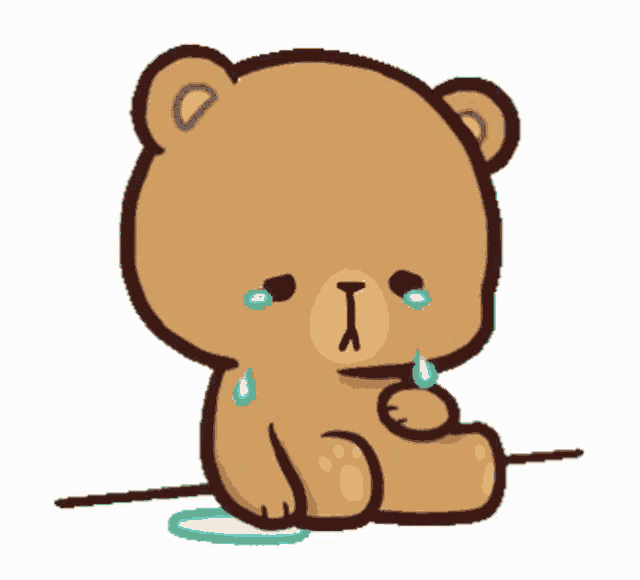
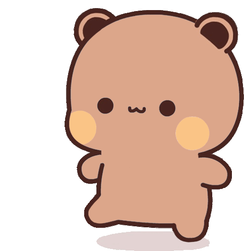
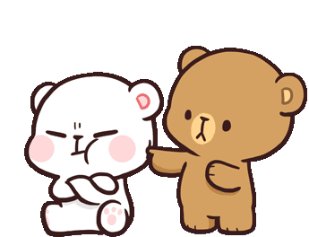
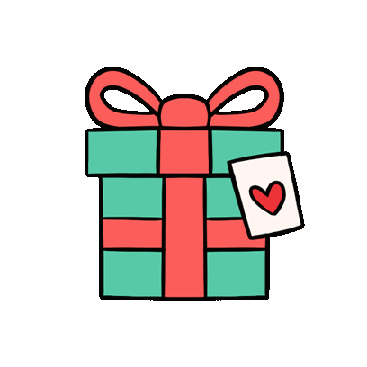

Dear Anu,

this is me right now...
I need to say sorry, properly. Not a quick "sorry" in a text, but a real one. Because you deserve that. You deserve so much more than what I gave you this past year.
I lied to you. About something personal. And I kept lying to cover that first lie, for over a year. The whole time, I watched you overthink, I watched you hurt yourself over something that was not even real, and I kept it going anyway because I was too scared to face what would happen if I told you. That is the part I hate the most about myself right now.
Yesterday night when I finally said it, my eyes were watery. I was crying so hard. Not because I was scared of what you would think, but because I could not stand watching you carry all that overthinking for one more day because of a lie I told. I did not want to keep hurting you. I could not. So I said it. I do not know where I found the courage, honestly. But I think it was you. It is always you. You are my strength, Anu. Even when I am at my worst, even when I am the one who messed up, somehow you are still the reason I do the right thing.

i kept walking away from the truth, and that was wrong
The truth is, I lied because I was scared. I was scared you would think less of me. I thought if you knew I had never been with anyone, you would see me as someone inexperienced, someone not good enough for you. So I said something that was not true to sound more "normal." And that was the stupidest, most cowardly thing I could have done.
Because of that one lie, you spent months overthinking something that never even happened. You were hurting over a fake past I invented. Every single time your mind went to that place and you felt bad, that was because of me. That is not okay. That is not what someone who loves you does.
i want to give you honesty from now on, not just flowers
You know now that I have never touched anyone. You are it for me. You were always it. And I was so afraid of that being a bad thing that I hid it for over a year instead of just saying it. It was never something to be ashamed of. I see that now. I just wish I had seen it a year ago so you never had to spend a single night overthinking something that never happened.
I know you are all the way in Gurugram and I am here, and we cannot just meet and fix things with a hug. We have to fix things with words, with patience, with trust. And I know I broke some of that trust. I am not asking you to forget what happened. I am asking you for the chance to rebuild it, slowly, with honesty this time.

notice me, please... 🥺
I know you said no kisses, no hugs, no images, no videos, no laughing until I truly apologize. That honestly broke my heart a little. Because those little things from you are my whole day. But I understand. You needed to know that I actually meant it. So here I am, meaning it.
No more lies. Not even small ones, not even the kind I tell myself are harmless. You deserve a version of me who is fully honest, even when it feels embarrassing, even when I am scared of what you will think. I would rather you know the real me and decide, than love a version of me I made up.
if i could teleport to Gurugram right now just for one hug...
Anu, I love you. Genuinely, fully, without any made-up story around it. You are the person I want to talk to every day, the person I want to be better for. Please forgive me. And when you do, I will spend however long it takes to actually deserve that forgiveness.

my whole heart, wrapped up for you
With all my love,
Your Bhondu who is very sorry ❤️
Your Bhondu who is very sorry ❤️